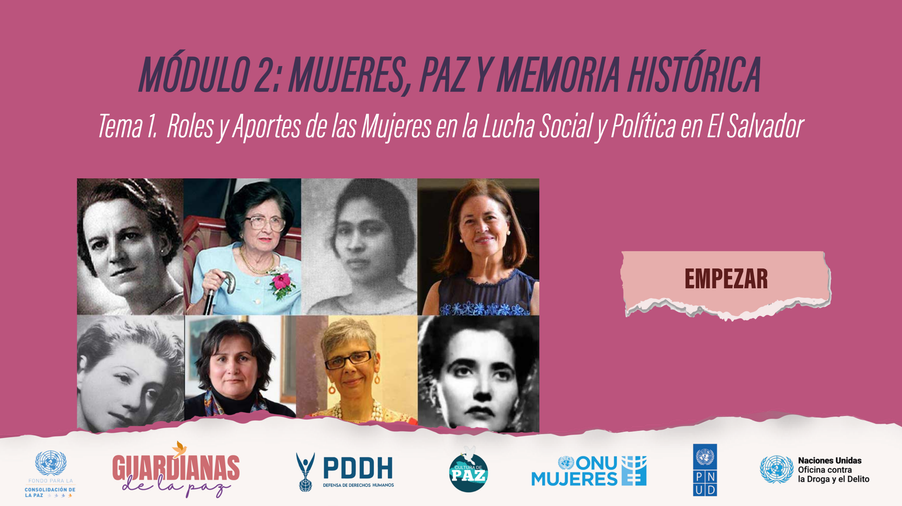
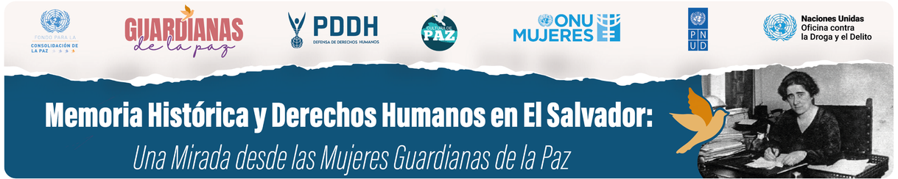
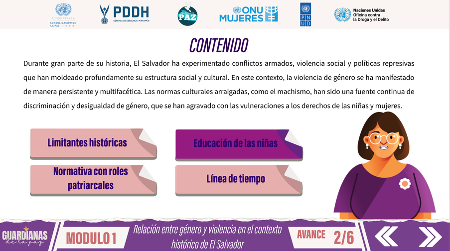
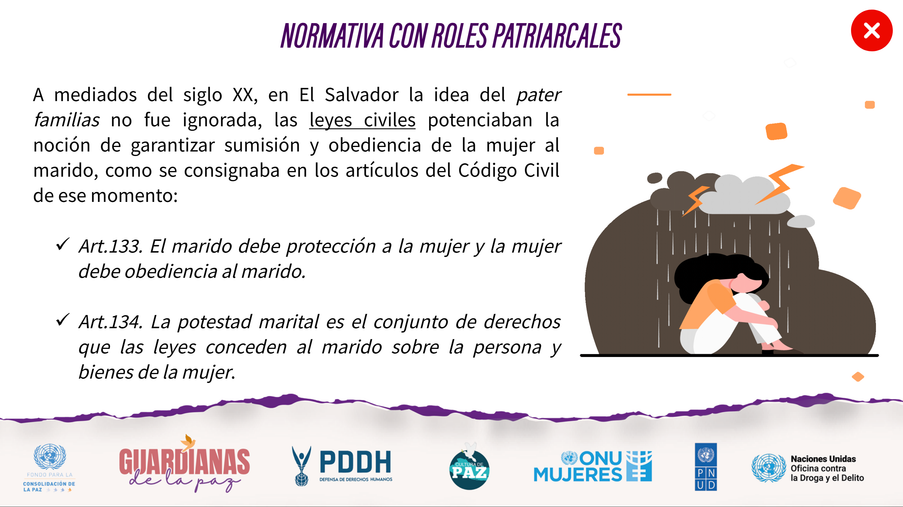
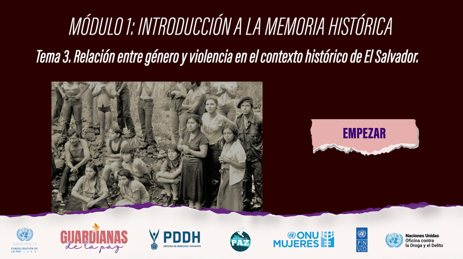
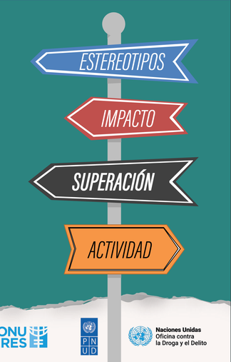
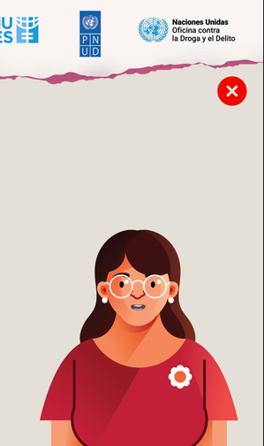
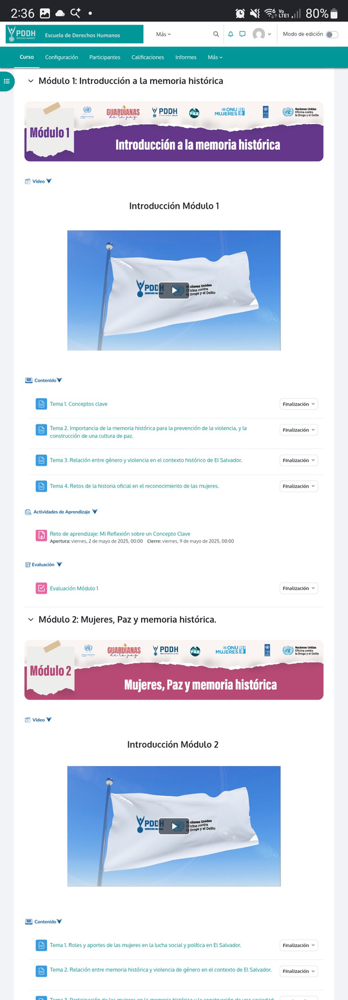

Objetivo del curso
Reconocer y valorar el papel protagónico de las mujeres como constructoras y guardianas de la paz, promoviendo la memoria histórica y la vigencia plena de los derechos humanos.
DERECHOS HUMANOS · AULA VIRTUAL & E-LEARNING
Memoria Histórica y Derechos Humanos: Una Mirada desde las Mujeres Guardianas de la Paz.
Se desarrolló un curso virtual orientado al fortalecimiento de conocimientos sobre memoria histórica, derechos humanos, género y cultura de paz en El Salvador para la Procuraduría para la Defensa de los Derechos Humanos. Además, se diseñó y organizó la estructura del curso dentro del aula virtual Moodle, distribuyendo los contenidos por módulos, temas, recursos, actividades de aprendizaje y evaluaciones.

01 / ESTRUCTURACIÓN PEDAGÓGICA
Reconocer y valorar el papel protagónico de las mujeres como constructoras y guardianas de la paz, promoviendo la memoria histórica y la vigencia plena de los derechos humanos.
Configuración del aula virtual, diseño de banners y señalética visual, estructuración de módulos formativos, recursos multimedia, foros de discusión y encuestas.
Configuración de cuestionarios automatizados, seguimiento de avance de las participantes y emisión de certificaciones digitales al completar el proceso.
02 / MATERIALES GRÁFICOS Y PEDAGÓGICOS
Materiales visuales desarrollados para acompañar las lecciones y actividades de aprendizaje, organizados en el collage del diseño original.






03 / AULA VIRTUAL EN MOODLE
Captura completa de la estructura real desplegada en la plataforma Moodle, organizada por módulos, foros, tareas y evaluaciones.
